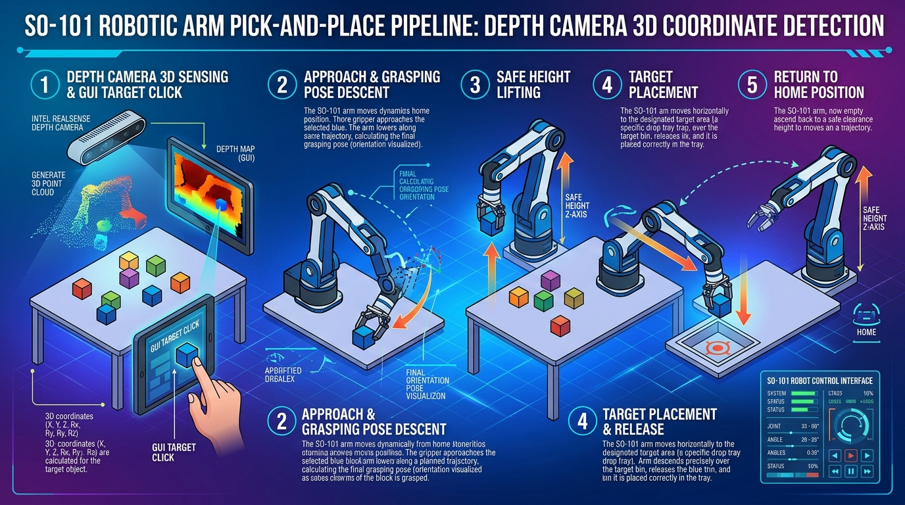

위치가 정해지지 않은 자유 배치 물체를 Depth 카메라 3D 좌표 인식과 GUI 클릭을 통해 안정적으로 파지하고 지정된 위치에 놓은 뒤 홈 자세로 복귀하는 전체 프로세스입니다.

뎁스(Depth) 카메라가 작업대를 촬영하여 Point Cloud 3D 공간 좌표계 (X, Y, Z)를 생성합니다. 사용자가 화면 GUI 상에서 원하는 물체를 클릭하면 해당 지점의 3차원 위치 데이터를 로봇 제어부로 전송합니다.
로봇팔이 물체 바로 위 안전 높이(Approach Pose)로 수평 이동한 뒤, 역운동학(IK)을 계산하여 물체 파지에 최적화된 각도와 형태로 감속 하강합니다. 그리퍼를 조여 물체를 견고하게 파지합니다.
파지 완료 후 surrounding 장애물이나 다른 물체에 부딪히지 않도록 Z축 수직 방향으로 안전 여유 고도(Clearance Height)까지 수직 상승시킵니다.
사용자가 GUI에서 지정한 목표 놓기 위치 3D 좌표로 이동합니다. 목표 상단에서 감속 하강한 뒤, 그리퍼를 천천히 열어(Release) 물체를 정확히 안착시킵니다.
놓기 작업이 끝나면 충돌을 방지하면서 초기 대기 상태인 홈(Home) 위치 및 관절 각도로 안전하게 복귀하여 다음 명령 입력을 대기합니다.